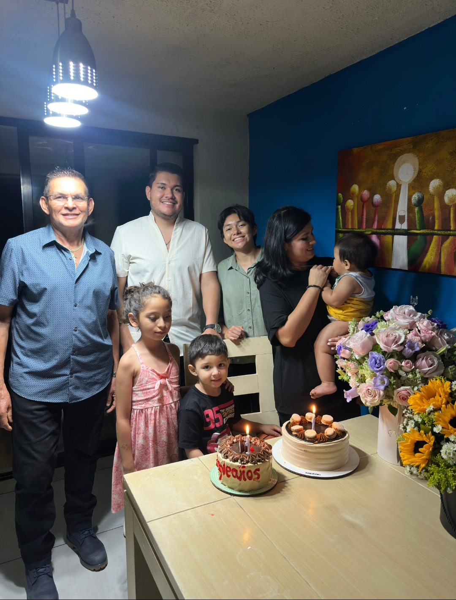
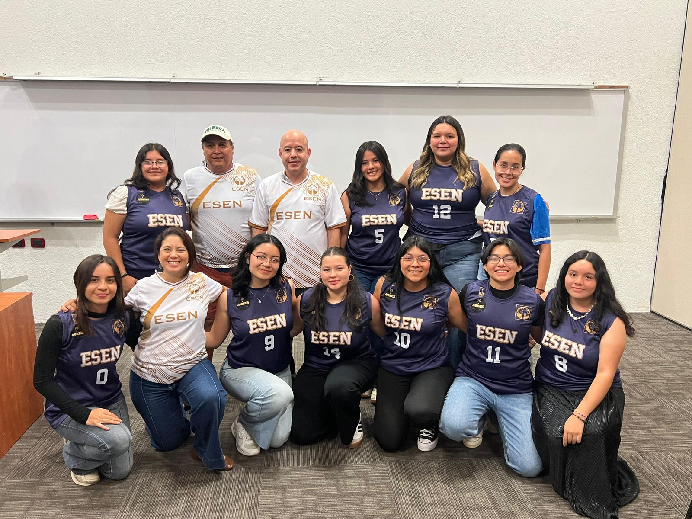
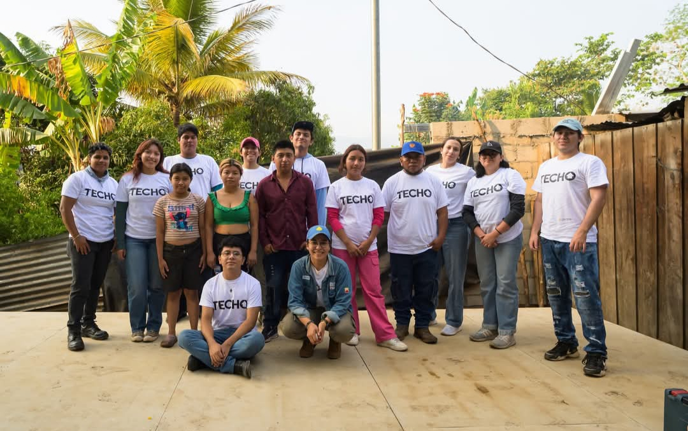
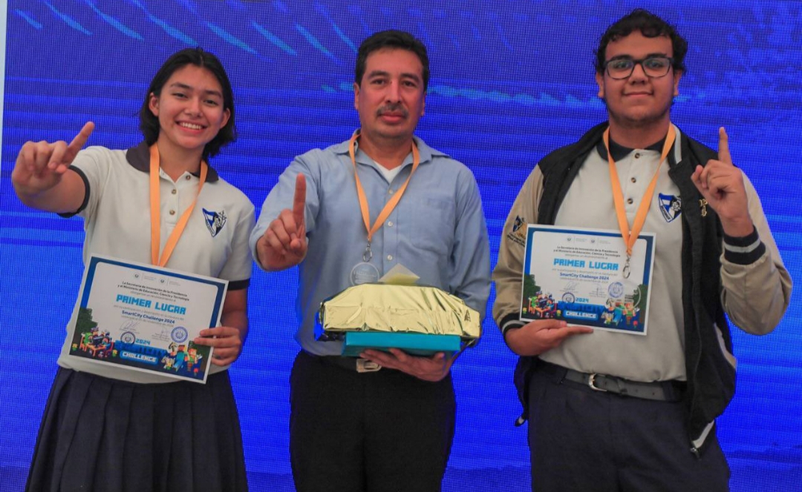
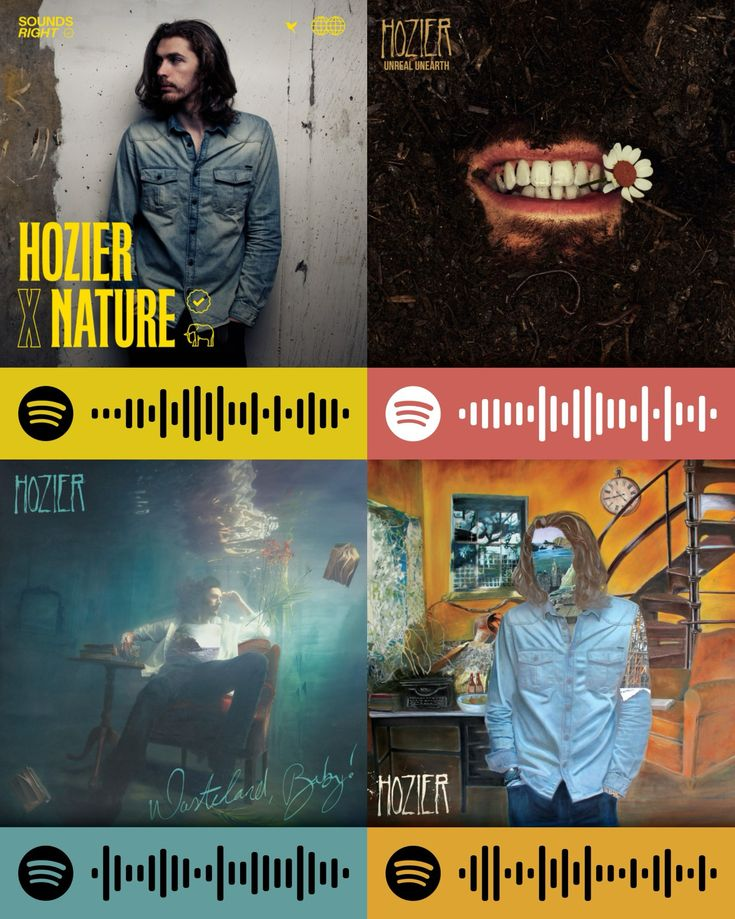
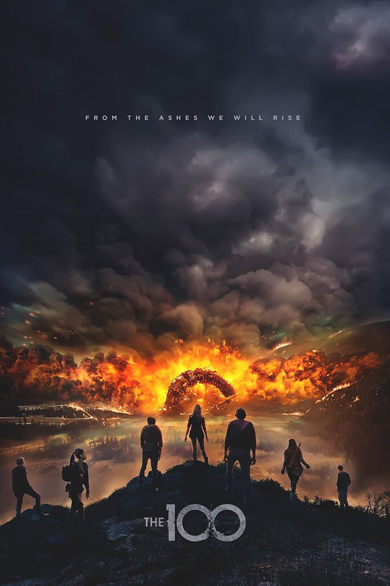
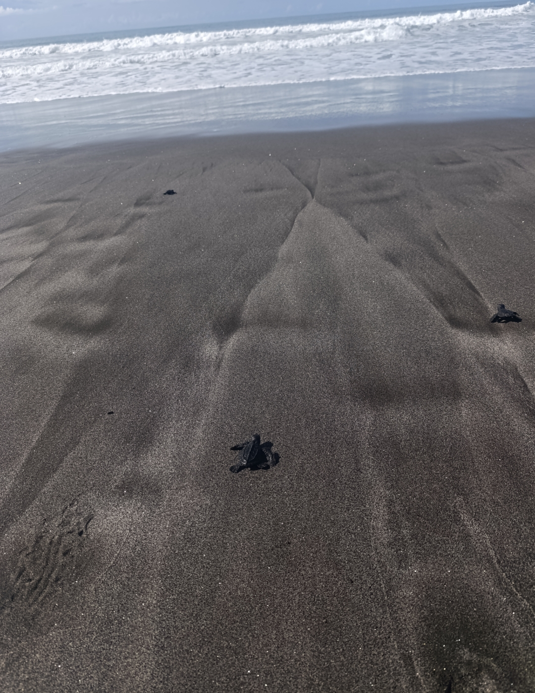
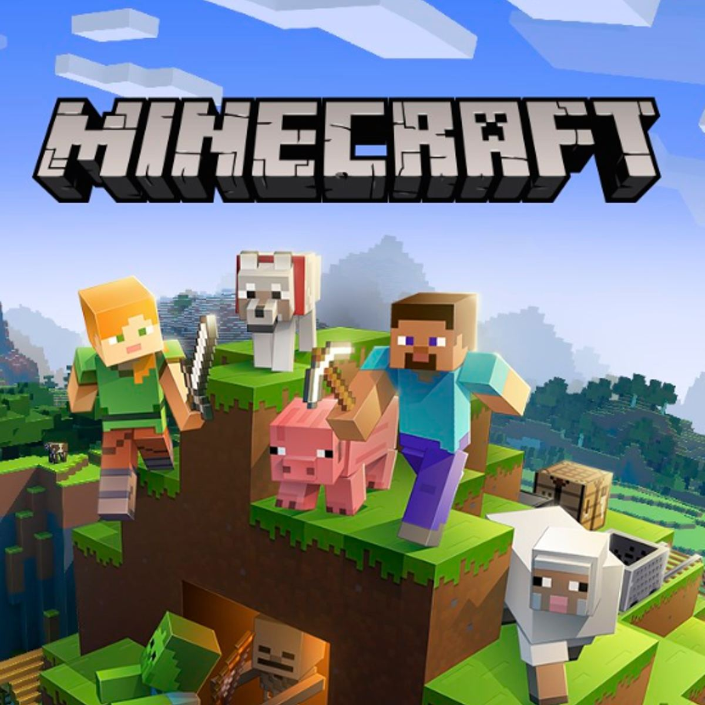

Un poco sobre mí
La persona detrás de esta historia
Soy una persona curiosa, perseverante y muy cercana a mi familia y amigos. Encuentro felicidad en los pequeños momentos: un partido de baloncesto, una tarde de videojuegos, una canción que me acompaña o una salida para descubrir un lugar nuevo. También disfruto poner mis conocimientos al servicio de otros y participar en proyectos que construyen comunidades más solidarias.
Descubre más
Las partes que forman mi mundo
Haz clic en cada título para mostrar la información.01 Familia y amigos +
Mi lugar seguro
Mi familia y mis amigos son una parte esencial de mi vida. Disfruto compartir tiempo con ellos, crear recuerdos y contar con personas que me impulsan a seguir creciendo. Son mi apoyo, mi alegría y mi mayor fuente de motivación.

02 Deporte +
Pasión por el baloncesto
Los deportes me enseñan disciplina, constancia y trabajo en equipo. Mi favorito es el baloncesto, porque combina estrategia, energía y confianza entre compañeros. Para mí, jugar también es una forma de despejarme y superar mis propios límites.

03 Voluntariado +
Construir junto a los demás
Desde hace un año soy voluntaria permanente en TECHO El Salvador. Esta experiencia me ha permitido conocer distintas realidades, trabajar con comunidades y comprender que ayudar también significa escuchar, aprender y construir soluciones en conjunto.
Conoce TECHO El Salvador →
04 Logros y formación +
Aprender, crear y superarme
Obtuve un bachillerato técnico en Contaduría y actualmente estudio Ingeniería de Software y Negocios Digitales en la ESEN. Uno de mis recuerdos más especiales es haber ganado el primer lugar en una competencia nacional de Minecraft, una experiencia que unió creatividad, estrategia y tecnología.
Visita el sitio de ESEN →
05 Música +
La banda sonora de mis días
La música siempre encuentra la forma de acompañarme. Entre mis artistas favoritos están Olivia Dean, Micro TDH, AURORA y Hozier. Me gustan porque cada uno tiene una identidad diferente y canciones capaces de transmitir emociones e historias.
Explorar música →
06 Series y sagas +
Historias de otros mundos
Mi serie favorita es The 100 y soy fan de las historias distópicas. Disfruto sagas como Los juegos del hambre, Harry Potter, Divergente y The Maze Runner, porque presentan mundos complejos, decisiones difíciles y personajes que luchan por cambiar su realidad.

07 Naturaleza y experiencias +
Siempre hay algo nuevo por descubrir
Me encanta estar en contacto con la naturaleza, conocer lugares y vivir experiencias nuevas. Cada salida representa una oportunidad para desconectarme de la rutina, observar otros paisajes y guardar recuerdos que después puedo compartir.

08 Videojuegos +
Creatividad y aventura
Los videojuegos son una de mis formas favoritas de entretenimiento. Me permiten explorar, resolver problemas y crear. Minecraft ocupa un lugar especial para mí, no solo por sus posibilidades infinitas, sino también por el logro nacional que alcancé gracias a él.

“Quiero seguir aprendiendo, descubriendo nuevos lugares y encontrando maneras de ayudar a los demás.”